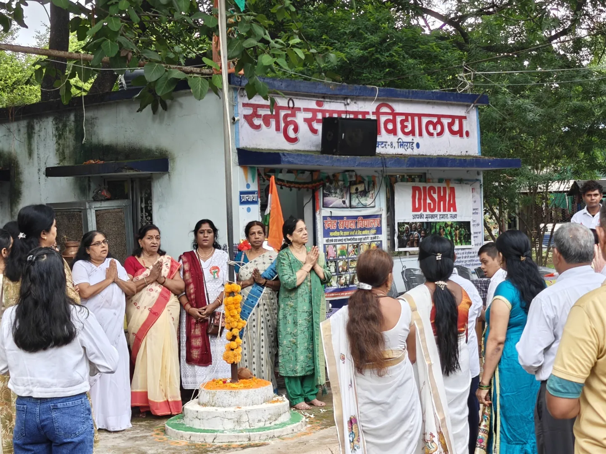
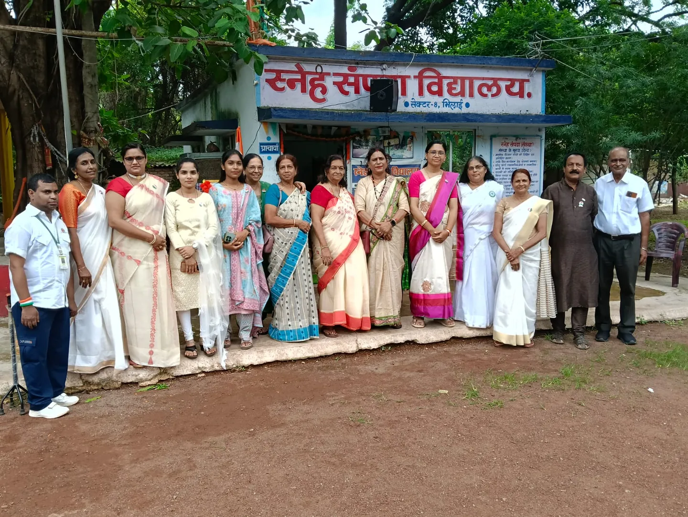
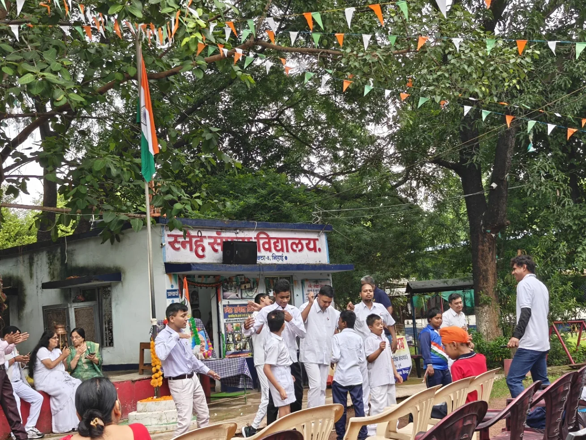
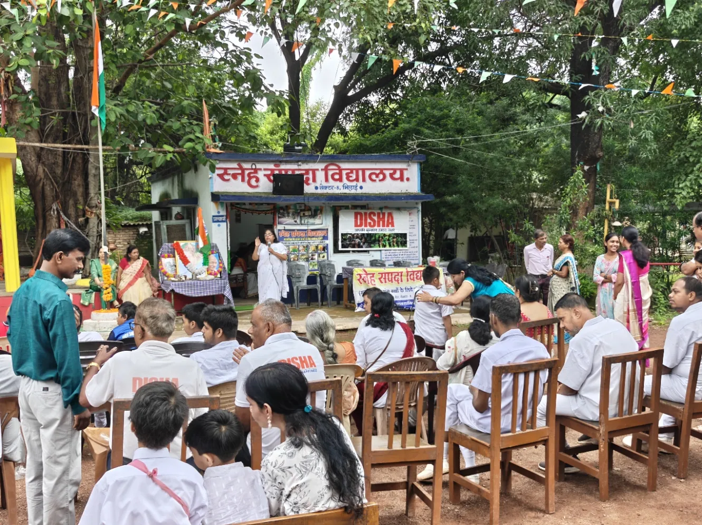

2026
The mission grows
Yoga, community participation and the new Foundation chapter continue a longer tradition of service. The Foundation was incorporated in 2026.
A journey of naturopathy, yoga and social welfare in Durg, growing from the work of Shree Sahaj Naturopathy & Yoga Center into a wider commitment to serving humanity.
Scenes from our 2026 community programme at Sneh Sampada Vidyalaya, Bhilai, reflecting participation, care and an ongoing commitment to welfare.

2026 recent activityCommunity gathering
2026 recent activityIndependence Day activities
2026 recent activityCommunity outreach
2026 recent activityA shared commitmentTo feature a future programme, replace the four photo cards in this clearly marked section.
Photographs from the earlier Gallery are organized by activity. Where an event date is not independently established, images are presented without assigning them to a year.
Follow the tree from its newest branches in 2026 downward through documented activities to the earliest surviving photographs in 2012.
Present → Past · Only years supported by dated photo filenames are illustrated
Yoga, community participation and the new Foundation chapter continue a longer tradition of service. The Foundation was incorporated in 2026.
Photographs document awareness activities, naturopathy programmes and blood donation initiatives during the year.
The available dated archive preserves participation in International Yoga Day activities.
Community outreach and naturopathy observances brought people together around natural wellness.
Naturopathy camps, Women’s Day gatherings and yoga activities are reflected in photographs from this year.
The historical archive records naturopathy observances and programmes supporting community awareness.
COVID-era kadha awareness outreach at District Court, Durg, appears alongside wellness and community activities.
Photographs of International Yoga Day reflect the earlier centre’s engagement with group wellness activities.
A Women’s Day photograph documents another chapter of the centre’s outreach and participation.
These are among the earliest dated photographs in the archive. The original Shree Sahaj Naturopathy & Yoga Center began its journey in 2010, before the Foundation was incorporated in 2026.